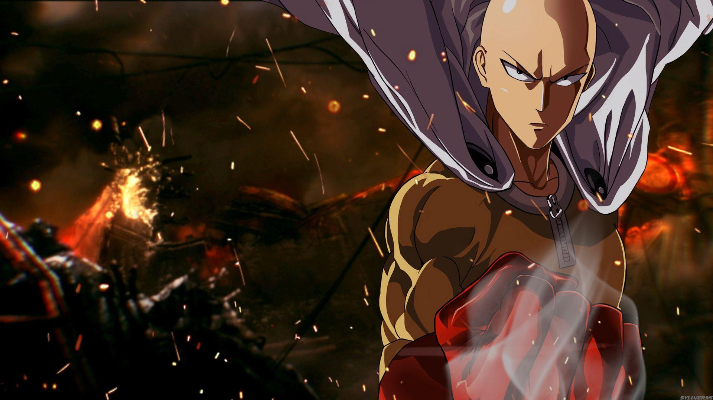
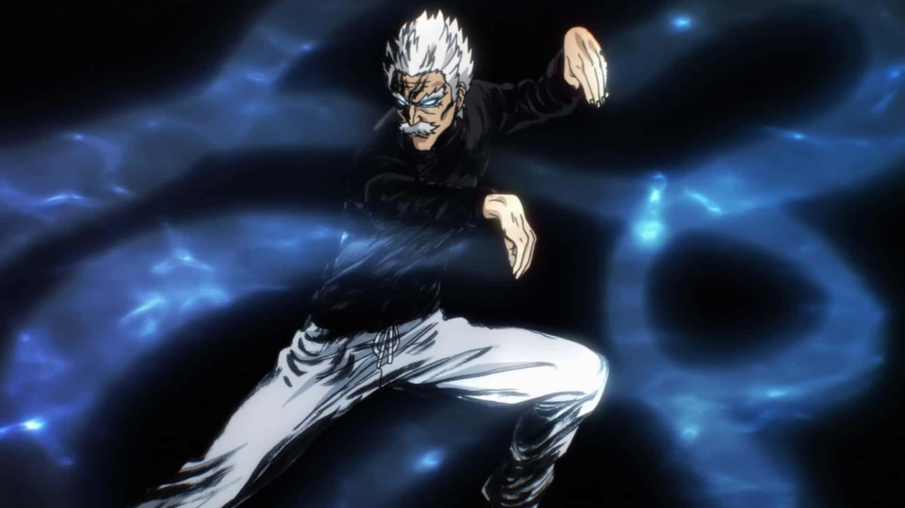
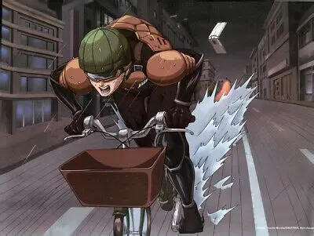
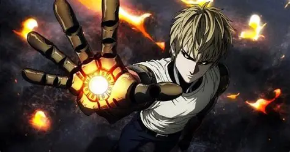
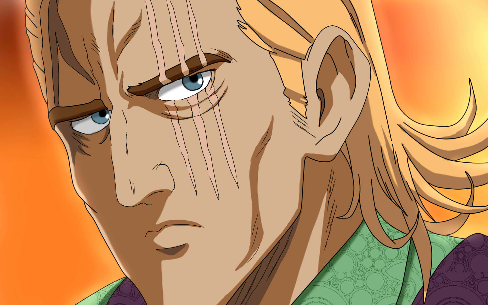
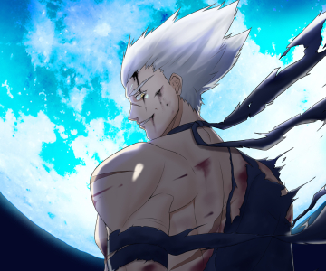

Clase S · Rango indefinido
Saitama
Puede vencer a cualquier rival de un solo puñetazo. Su mayor problema es el aburrimiento, no el enemigo.
Una muestra de los héroes y amenazas más destacados de la serie, ordenados por categoría.

Puede vencer a cualquier rival de un solo puñetazo. Su mayor problema es el aburrimiento, no el enemigo.

Maestro del "Puño Roca Fluida", entrena a jóvenes discípulos y respeta profundamente a Saitama.

Sin poderes especiales, solo una bicicleta y un coraje inquebrantable frente a cualquier amenaza.

Esper de enorme poder psíquico y temperamento explosivo, subestimada por su apariencia infantil.

Cyborg discípulo de Saitama, obsesionado con volverse más fuerte tras perder a su familia.

Conocido como "el hombre más fuerte", su reputación se construyó sobre una enorme confusión.

Ex discípulo de Bang que decide convertirse en "el cazador de héroes" para vengar a los monstruos.

Producto de experimentos de la Asociación de Monstruos, representa a las incontables criaturas que Saitama enfrenta.

Parte de la flota de Boros que llega a la Tierra en busca de un oponente digno de pelear.